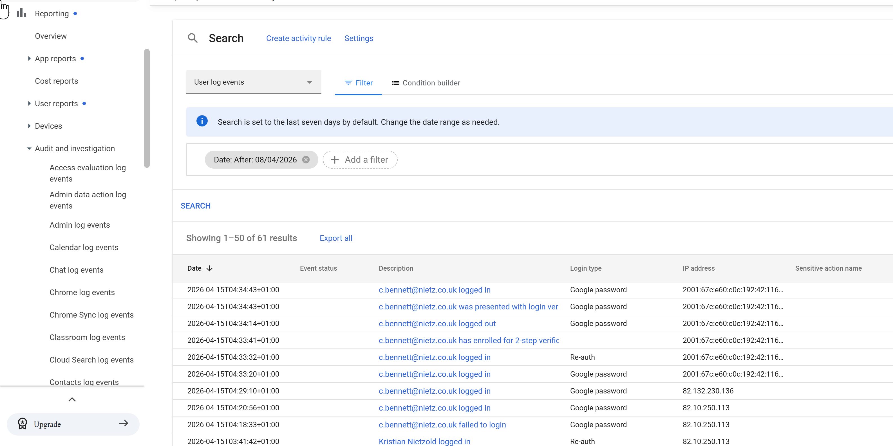
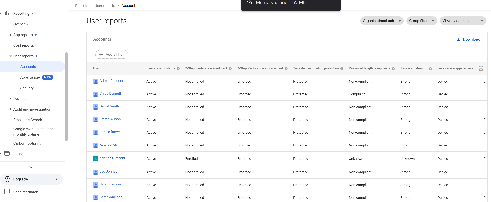
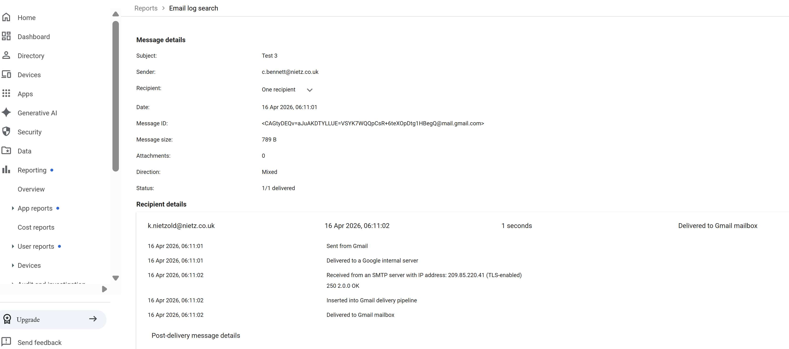
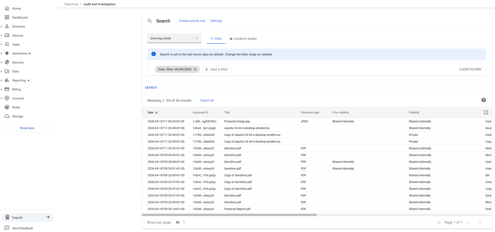

Google Workspace 12: Reporting and Monitoring
Audit, reporting and investigation visibility.
12 – Reporting & Monitoring
Overview
Used Google Workspace reporting and audit tools to:
Monitor user authentication activity
Assess account security posture
Investigate email delivery
Track file activity and sharing behaviour
Identify potential data exposure risks
The focus is on real-world administrative visibility and investigation workflows.
User Activity Monitoring (Audit & Investigation)
The Audit and Investigation tool was used to analyse user authentication activity.

Observations
Successful and failed login attempts are visible
2-Step Verification events are logged
Login types (password, re-authentication) are recorded
IP addresses allow location-based analysis
Use Case
Detect suspicious login behaviour
Investigate failed login attempts
Validate enforcement of security policies (e.g. 2SV)
Account Security Posture (User Reports)
User account security status was reviewed across the organisation.

Key Insights
- 2-Step Verification:
- Enforcement: Enabled
- Enrolment: Mixed (some users not enrolled)
- Password compliance:
- Some users marked non-compliant
- Account protection:
- All accounts show Protected
Use Case
Identify users not enrolled in 2SV
Detect weak or non-compliant password configurations
Support security audits and compliance reviews
Application & Storage Usage
App usage reporting was analysed to understand user behaviour and storage consumption.

Observations
- Per-user storage usage across:
- Gmail
- Google Drive
- Photos
Clear visibility of highest usage accounts
Some users show minimal or no activity
Use Case
Identify heavy storage users
Detect inactive accounts
Support capacity planning and licensing decisions
Email Investigation (Email Log Search)
Email Log Search was used to trace a test email between users.

Action Performed
- Filtered by:
- Sender
- Recipient
- Date range
- Located specific test messages
Email Message Trace
Detailed message inspection was performed to validate delivery and routing.

Insights
Message successfully delivered (1/1 delivered)
Full message metadata available:
- Message ID
- Timestamp
- Mail flow path
- Delivery pipeline confirms:
- SMTP receipt
- Internal processing
- Final mailbox delivery
Use Case
Troubleshoot email delivery issues
Verify whether messages were received
Analyse mail routing and delays
Drive Activity Monitoring
Drive audit logs were reviewed to monitor file activity.

Observations
- File actions include:
- Creation
- Copying
- Movement
- Permission changes
- Visibility changes tracked (internal → external)
Use Case
Track file lifecycle events
Monitor user behaviour in Drive
Detect unusual activity
External Sharing Investigation
Filtering was applied to identify files shared outside the organisation.

Findings
Files identified as shared externally
Events include:
- Permission changes
- File access
- File movement
- Actor (user) and timestamp clearly recorded
Security Impact
Highlights potential data leakage risks
Enables rapid investigation of:
- Who shared the file
- When it occurred
- What type of access was granted
Key Security Capabilities Demonstrated
Centralised audit logging across services
Correlation of identity, email, and file activity
Visibility into authentication and access behaviour
Ability to investigate incidents end-to-end
Validation
The following confirms correct implementation:
Login activity and 2SV events are logged in real time
Account security posture is visible across all users
Email delivery can be traced end-to-end
File activity and sharing behaviour are fully auditable
External sharing events can be isolated and investigated
Real-World Considerations
Audit logs should be retained long-term for compliance
Alerts should be configured for high-risk actions (e.g. external sharing)
Integration with SIEM tools enhances threat detection
Regular reviews of reports help maintain security posture
Summary
Evidence covered:
Practical use of Google Workspace reporting tools
Real-world investigation workflows
Visibility across authentication, email, and file activity
Ability to detect and analyse potential security risks